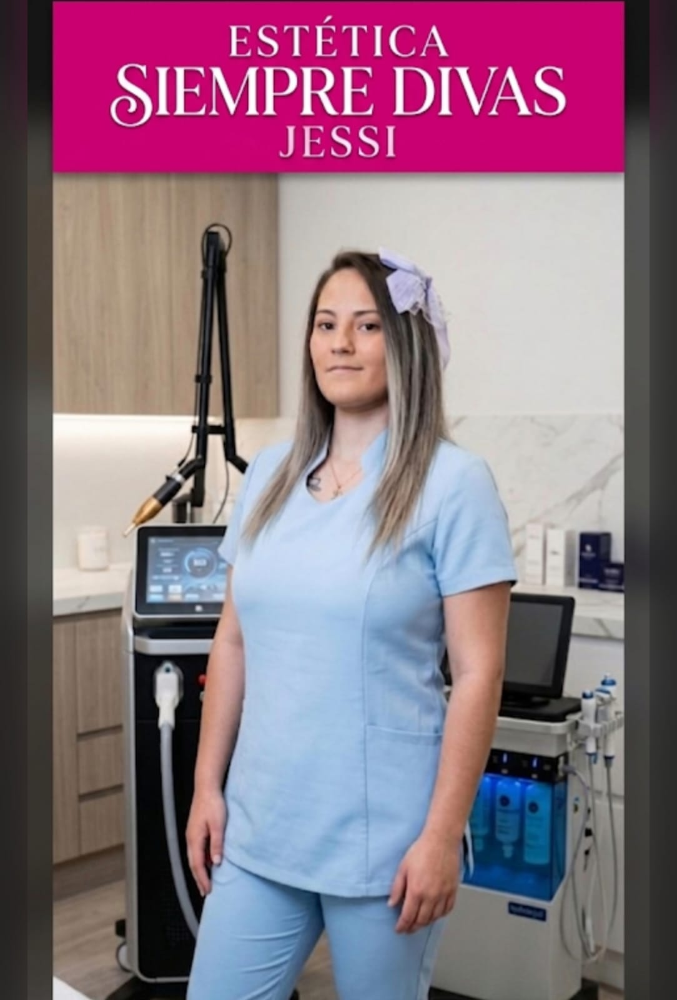

Enfermera profesional desde hace 15 años. Hoy, esteticista certificada. Siempre, al servicio de las personas.

Soy Jessica Agudelo, enfermera profesional desde hace 15 años. Durante ese tiempo estuve en salas de cirugía, en partos, tomando muestras de sangre, en cirugías plásticas de belleza y en atención hospitalaria. En 2026 hice los cursos para prestar un nuevo servicio: la manipulación de las máquinas de depilación láser diodo, hidrafacial y lipoláser 6 en 1 para quemar grasa.
Una de mis pasiones es atender y servirle al ser humano. Soy una mujer servicial, amable, paciente y siempre dispuesta a hacer lo mejor de mi trabajo, para que mis clientas y clientes queden felices con los procedimientos que hago.
Cada etapa me dejó una manera distinta de cuidar a las personas. Hoy las reúno todas en cada sesión.
Asistencia en procedimientos quirúrgicos: protocolos estrictos de bioseguridad y precisión en cada detalle.
Acompañamiento en uno de los momentos más sensibles para una persona, con calma y contención.
Manejo cuidadoso de procedimientos invasivos, con atención al confort del paciente.
Primer acercamiento al mundo de la estética, desde el rol de enfermera en quirófano.
Años de trato directo con pacientes: escucha, paciencia y servicio como base de todo cuidado.
Cursos de manipulación de máquinas de depilación láser diodo, hidrafacial y lipoláser 6 en 1, para abrir Siempre Divas Jessi.
Mi trabajo empieza por el gusto de servir al otro.
Trato cercano, desde que escribes hasta que sales de la cita.
Cada piel y cada proceso tienen su propio tiempo.
Siempre dispuesta a dar lo mejor para que quedes feliz.
Cuéntame qué te gustaría tratar y te acompaño en todo el proceso.